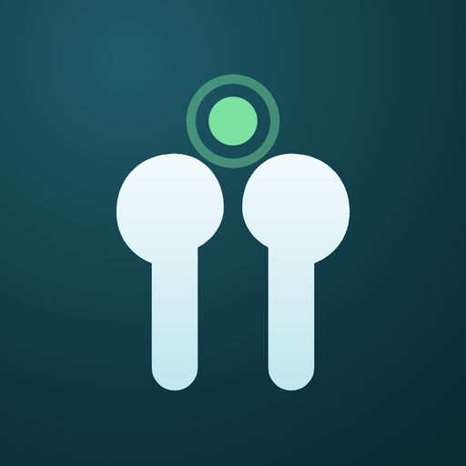

AnDPoP
Android 13+ · Open Source GPL-3.0Battery, listening modes, and controls for your AirPods on Android
AnDPoP 2.0 brings per-bud and case battery status, Noise Cancellation / Transparency / Adaptive Audio switching, Conversation Awareness, press-and-hold customization, a 3-band equalizer, widgets, and Quick Settings controls into a clean Material 3 Expressive Android app.
Privacy-first by design
- Works completely offline as a guest — no account required.
- No advertisements, no analytics SDKs, no third-party tracking, and no in-app purchases.
- Optional account sign-in stores only your email address and authentication record, encrypted in transit over HTTPS and deletable at any time in-app or on the web.
Support & Credits
Need help or want to report a bug? Open an issue at github.com/TeddyQyuon/AnDPoP/issues.
AnDPoP is licensed under GNU GPL-3.0-or-later and is an independent fork based on LibrePods.